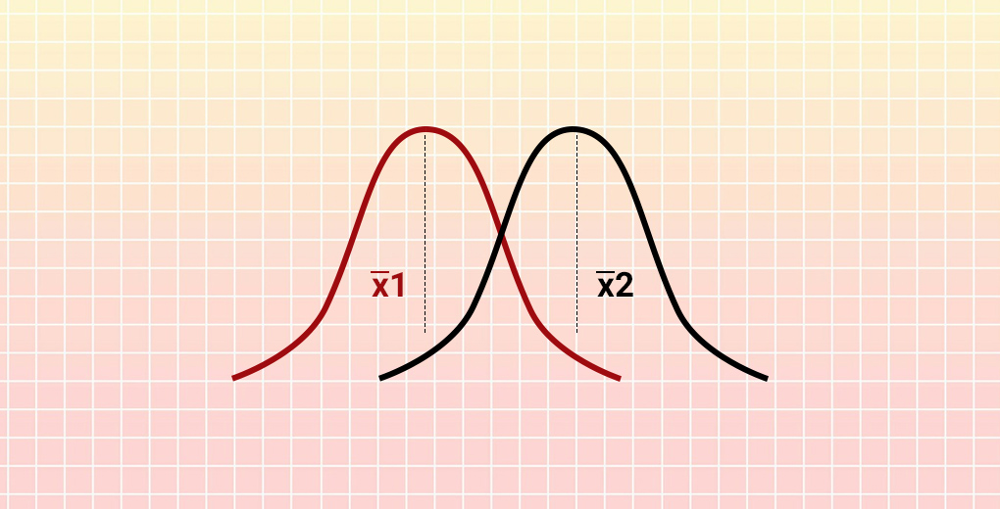

Formulate the null hypothesis \(H_0\) (commonly, that the observations are the result of pure chance) and the alternative hypothesis \(H_a\) (commonly, that the observations show a real effect combined with a component of chance variation).
Identify a test statistic that can be used to assess the truth of the null hypothesis.
Compute the p-value, which is the probability that a test statistic at least as significant as the one observed would be obtained assuming that the null hypothesis were true. The smaller the P-value, the stronger the evidence against the null hypothesis.
Compare the p-value to an acceptable significance value \(\alpha\) (sometimes called an alpha value). If \(p\leq \alpha\), that the observed effect is statistically significant, the null hypothesis is ruled out, and the alternative hypothesis is valid.
\(\cdot\) Single normal distribution OR Compariance of two normal distributions
\(\cdot\) For single normal distribution, if standard deviation(\(\sigma\)) unknown, using t.test(x,alternative,mu,conf.level)
\(\qquad\)x=data
\(\qquad\)alternative = c(“two.sided”, “less”, “greater”)
\(\qquad\)mu=a number indicating the true value of the mean
\(\qquad\)conf.level \(= 1-\alpha\)
\(\cdot\) Comparing the mean of two given samples(assume normal distribution) using t.test(x,y,alternative,mu,paired,conf.level) \(\qquad t-statistic=\frac{x_1-x_2}{\frac{\sigma}{\sqrt{n_1}}+\frac{\sigma}{\sqrt{n_2}}}\)
\(\qquad\)x=data_1
\(\qquad\)x=data_2
\(\qquad\)alternative = c(“two.sided”, “less”, “greater”)
\(\qquad\)mu= difference in means
\(\qquad\)conf.level \(= 1-\alpha\)
\(\qquad\)paired: a logical indicating whether you want a paired t-test
\(\cdot\) Comparing the variance of two given samples(assume normal distribution) using t.test(x,y,ratio,alternative,conf.level) \(\qquad\)x=data_1
\(\qquad\)x=data_2
\(\qquad\)ratio= hypothesized ratio of the population variances of x and y
\(\qquad\)alternative = c(“two.sided”, “less”, “greater”)
\(\qquad\)conf.level \(= 1-\alpha\)
\(\cdot\) Single variable
\(\cdot\) Exact computation
\(\cdot\) binom.test(x,n,p,alternative,conf.level)
\(\qquad\)x=success
\(\qquad\)n=ntrails
\(\qquad\)p=hypothesized probability of success
\(\qquad\)alternative = c(“two.sided”, “less”, “greater”)
\(\qquad\)conf.level \(= 1-\alpha\)
\(\cdot\) Single variable OR Several groups
\(\cdot\) Approximate computation
\(\cdot\) Single variable could be used to test single proportion
\(\cdot\) Several groups could be used to test the difference between samples in proportion
\(\qquad\) If p-value \(<\alpha\), then there is sufficient evidence to against then null hypothesis, which proportions are same. Then they differ from each other.
\(\cdot\) prop.test(x,n,p,alternative,conf.level,correct)
\(\qquad\)x=success OR a vector of counts of successes
\(\qquad\)n=ntrails OR a vector of counts of trials
\(\qquad\)p=hypothesized probability of success OR a vector of probabilities of success
\(\qquad\)alternative = c(“two.sided”, “less”, “greater”)
\(\qquad\)conf.level \(= 1-\alpha\)
\(\qquad\)correct: If discrete will be FALSE, else will be TRUE, works no more than two groups
\(\cdot\) Association between two samples in proportion
\(\cdot\) Approximate computation
\(\cdot\) Requirement to use Chi-square distribution
\(\qquad\) No more than \(\frac{1}{5}\) of the cells have expected values \(<5\)
\(\qquad\) No cell has an expected value \(<1\)
\(\cdot\) chisq.test(x,correct,simulate.p.value,B)
\(\qquad\) x= A matrix of the data
\(\qquad\) correct: The corrects for continuity(FALSE in discrete); default is TRUE
\(\qquad\) simulate.p.value: Using Monte Carlo simulation when sample does not meet the requirement, which equal to TRUE
\(\qquad\) B= The number of replicates used in the Monte Carlo test
\(\cdot\) Association between two samples in proportion
\(\cdot\) Exact computation
\(\cdot\) Using when the requirement not met in chi-square test
\(\cdot\) fisher.test(x,alternative)
\(\qquad\) x= A two-dimensional contingency table in matrix form of the data
\(\qquad\) alternative = c(“two.sided”, “less”, “greater”)